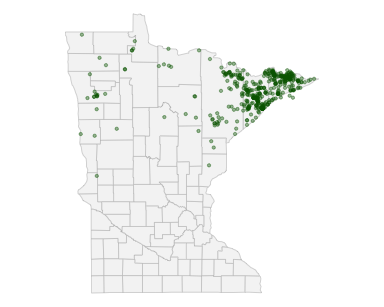

Spatial data and sf, real species records from GBIF, and an interactive leaflet map
maps
sf
spatial
gbif
leaflet
ggplot
An intro to maps in R. Spatial data and coordinate systems, the sf package, and geom_sf() — warming up on ~5,000 Bigfoot sighting reports, then downloading real moose occurrence records from GBIF with rgbif, mapping them across the US including Alaska, and finishing with a live leaflet map.
Author
Bill Perry
Published
November 5, 2026
Where we left off — Joins
Joins — combined two fisher tables by a shared key, and used anti_join() to find what didn’t match
Keys had to be cleaned before they would match — case, type, format
That same skill comes back at the end of today, pointed at a map
Note
✅ Transition
Today has two halves. First, Bigfoot — a joke dataset with a serious lesson in it. Then the real thing: we download actual occurrence records for a species from GBIF, map them across the country, and finish with a map you can pan and zoom. 🦶
Goals for today
Understand spatial data — points, polygons, and coordinate systems
Do this at start of class — they pull in a lot of dependencies.
Note
The homework is a separate file
17_mapping_homework.R. That one you turn in — a species you pick.
🧩 Chunk 1 of 4 · Bigfoot, for Fun
We will cover: what spatial data is, and how latitude/longitude becomes a map.
What Is Spatial Data?
Three ideas and you have it:
Points — one coordinate pair. A sighting, a tree, a weather station.
Polygons — a closed ring of coordinates. A state, a lake, a park.
CRS — the coordinate reference system: what the numbers mean.
4326 is plain latitude/longitude in degrees — what a phone GPS gives you, and what almost every dataset arrives in.
Note
📖 Vocabulary
Two datasets will not line up unless they share a CRS. Most mismatched-map bugs are two layers in two different systems.
The sf Package — a Data Frame with Geometry
# Load packages + the sighting data ------------------library(tidyverse)library(sf) # spatial data frameslibrary(maps) # country + state outlineslibrary(rgbif) # species records from GBIFlibrary(leaflet) # live maps# The file is in your data/ folder ------------------bigfoot_df <-read_csv("data/bfro_reports_geocoded.csv")dim(bigfoot_df)
[1] 5021 29
An sf object is a tibble with one extra column, geometry
Every dplyr verb you know still works on it
~5,000 real BFRO reports, each geocoded to a lat/long
Clean the Coordinates First
# Drop missing coords + keep the lower 48 ------------bigfoot_df <- bigfoot_df %>%filter(!is.na(latitude), !is.na(longitude)) %>%filter(longitude >-125, longitude <-66, latitude >24, latitude <50)nrow(bigfoot_df)
[1] 4031
st_as_sf()errors on missing coordinates — filter them first
The four numbers are a bounding box around the lower 48
Warning
⚠️ Remember this line. It throws Alaska away on purpose. In Chunk 3 we want Alaska back.
Make It Spatial — st_as_sf()
Note
🔮 Predict first: ~4,000 rows of lat/long, plotted with no basemap. What shape will the cloud make?
# Build the geometry column from lon/lat -------------bigfoot_sf <- bigfoot_df %>%st_as_sf(coords =c("longitude", "latitude"),crs =4326)# Just the points — the USA appears on its own -------ggplot(bigfoot_sf) +geom_sf(alpha =0.2, size =0.5)
coords = c("longitude", "latitude") — x first, always
crs = 4326 — tell sf these are degrees
No map needed: the data drew the country
Put It on a Real Map
# Basemap first, then points on top ------------------states_sf <-st_as_sf( maps::map("state", plot =FALSE, fill =TRUE)) %>%st_set_crs(4326)ggplot() +geom_sf(data = states_sf,fill ="grey96", color ="grey75") +geom_sf(data = bigfoot_sf, alpha =0.2,size =0.5, color ="firebrick") +theme_void()
Order matters — states first, points on top
theme_void() drops axes and grid
Note
🤔 The real question
Is this a map of Bigfoot, or a map of where people live, hike, and file reports? Hold that thought — the moose data has the same problem.
🛑 Pause — Do Activity Parts 1–3 Now
Read the sightings, make them spatial, and put them on the map. Then ask yourself what the map is really showing.
🧩 Chunk 2 of 4 · Real Occurrence Data — GBIF
We will cover: where real species records come from, and how to pull them into R.
Tip
🖐 After this chunk: Activity Parts 4–5 (download moose, then check what you got).
Where Real Occurrence Data Lives
GBIF — the Global Biodiversity Information Facility — pools occurrence records from:
museum and herbarium collections
government survey programs
citizen science apps like iNaturalist
Billions of records. Free. And rgbif queries it straight from R — no website, no download button.
Warning
⚠️ Scientific names only
GBIF does not know “moose.” It knows Alces alces. Common names are ambiguous across languages and regions; the genus species is not.
Downloading Moose
# Up to 2000 US moose records with coordinates -------moose_raw <-occ_data(scientificName ="Alces alces",country ="US",hasCoordinate =TRUE,limit =2000)$datadim(moose_raw)
[1] 2000 119
scientificName — genus + species, spelled exactly
country = "US" — two-letter code
hasCoordinate = TRUE — skip records we can’t map
limit — how many to bring back
$data — occ_data() returns a list; the records are in its data slot
119 columns arrive. We want five.
What Did limit Actually Give You?
# How many US moose records EXIST? -------------------occ_count(scientificName ="Alces alces",country ="US")
[1] 28004
# What years did OUR 2000 come from? -----------------moose_raw %>%count(year, sort =TRUE)
# A tibble: 1 × 2
year n
<int> <int>
1 2026 2000
About 28,000 records exist. We asked for 2,000 — and they all came from one year.
Important
limit is a cutoff, not a sample.
It hands back the first n records GBIF returns, newest first. Map those and call it “the range” and you are making a claim your data cannot support.
🛑 Pause — Do Activity Parts 4–5 Now
Download the moose records, then find out how many exist and what years you actually got.
🧩 Chunk 3 of 4 · Map the Moose — Alaska Included
We will cover: the same st_as_sf() recipe on new column names, a basemap that doesn’t stop at the Canadian border, and how to zoom out to the world or in to one state.
Tip
🖐 After this chunk: Activity Parts 6–8 (trim it, map the whole country, then change the scale).
GBIF names its coordinates decimalLongitude / decimalLatitude.
The recipe did not change — only the names you hand to coords. Longitude still goes first.
Alaska has more moose records than anywhere else. Which is a problem…
The Lower-48 Basemap Problem
states_sf from Chunk 1 is the lower 48 only. It has no Alaska at all — so the biggest cluster of moose in the country would simply not be drawn.
# Country outlines, Alaska included ------------------usa_sf <-st_as_sf( maps::map("world", regions ="USA",plot =FALSE, fill =TRUE)) %>%st_transform(4326)
Warning
⚠️ Two traps at once
The Aleutians cross the date line, so the raw extent runs −178 to +180 and squashes the country to a sliver. coord_sf() limits fix it.
crs = 5070 is CONUS Albers — it mangles Alaska. Leave this map unprojected.
lat_0 / lon_0 = the spot you look straight down on.
Knob 2 — One State, With Counties
moose_mn_sf <- moose_mn_raw %>%filter(!is.na(decimalLongitude), !is.na(decimalLatitude)) %>%st_as_sf(coords =c("decimalLongitude", "decimalLatitude"),crs =4326)mn_sf <-st_as_sf( maps::map("county", regions ="minnesota",plot =FALSE, fill =TRUE)) %>%st_set_crs(4326)ggplot() +geom_sf(data = mn_sf, fill ="grey96", color ="grey75") +geom_sf(data = moose_mn_sf, alpha =0.4,size =0.8, color ="darkgreen") +theme_void()

Two spellings: "Minnesota" for GBIF, "minnesota" for maps — change both to switch states
The North Shore cluster — moose habitat, and Highway 61
Important
A small area gets you the whole record.
The US pull was all one year. Minnesota has only a few hundred records — under the limit — so you get them all, back to the 1980s.
🛑 Pause — Do Activity Parts 6–8 Now
Trim the records, map them on a basemap with Alaska in it, then change the scale — the whole world, and one state.
🧩 Chunk 4 of 4 · Go Live 🗺️
We will cover: turning a static picture into a map you can pan, zoom, and click.
Tip
🖐 After this chunk: Activity Parts 9–10 (make it live, then add popups).
leaflet — a Real Web Map
# A map you can zoom ---------------------------------leaflet(moose_sf) %>%addTiles() %>%addCircleMarkers(radius =4, stroke =FALSE,fillOpacity =0.6,color ="darkgreen")
Three lines:
leaflet(moose_sf) — start from your sf object
addTiles() — the actual world map, streamed from the web
addCircleMarkers() — a dot per record
Important
▶ Run this one yourself
It opens in the Viewer pane. It can’t be printed onto a slide — the whole point is that it moves.